Zofia Sawicka
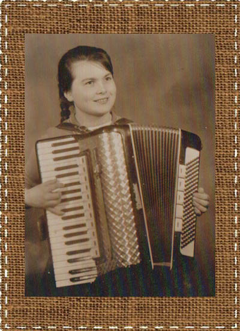
Zofia

Zofia w młodości.

Zofia
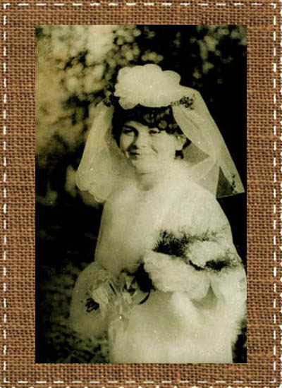
Piękna i szczęśliwa pani młoda.
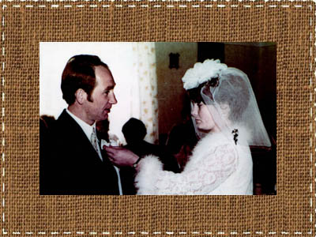
Wszystko musi grać!
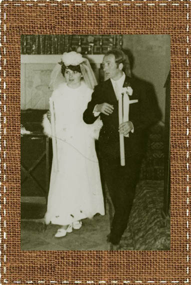Zofia i Tadeusz.

Młodzi Klimarowie z pierwszą córeczką Renatą.

Tadeusz z córką Renatą.
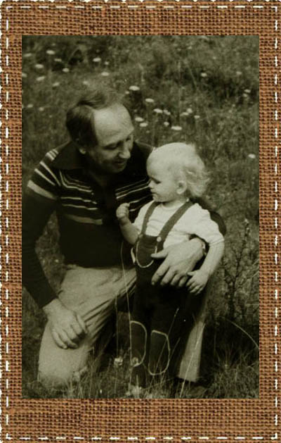
Tadeusz z córką Pauliną.

Zofia z córkami Pauliną i Małgorzatą.

Tadeusz w Chicago.
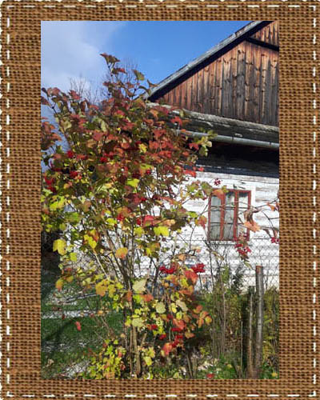Stary dom w Lubniu.

Zofia
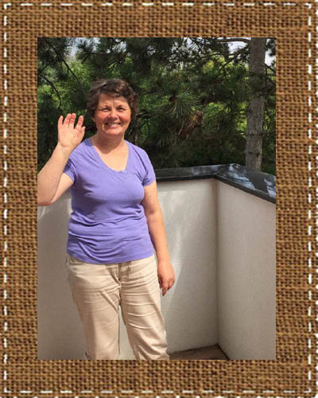Zofia u córki Małgorzaty w Wiedniu.
Zofia Sawicka urodziła się 02.04.1950 roku w Bejscach. Ukończyła miejscową szkołę podstawową, a następnie w latach 1964-1969 uczyła się w Państwowym Technikum Rolniczym w Czernichowie koło Krakowa. Rolnictwo nie było jej wymarzoną profesją, bo po Sawickich dziedziczyła smykałkę do liczenia. Marzyła o szkole związanej z ekonomią, księgowością, ale na ówczesnej wsi nikt takiego zawodu nie traktował poważnie. Grzeczna, pracowita i spolegliwa została dyplomowaną rolniczką i na tym jej kariera farmerki szczęśliwie się zakończyła.
Po maturze wyjechała do Krakowa, gdzie podjęła pracę księgowej w Krakowskim Przedsiębiorstwie Remontowo-Budowlanymi. Tam też poznała Tadeusza Klimarę, kierownika stolarni. Tak naprawdę Tadeusz był artystą stolarzem, ale w tych czasach trudno było wyżyć z samego talentu, stąd praca etatowa.
Zofia wpadła mu w oko, bo była kobietą niezwykłą. Ładna, zawsze uśmiechnięta, pogodna i życzliwa, a przy tym prawdziwa gospodyni domowa - od najmłodszych lat potrafiła gotować, piec, zajmować się domem i gospodarstwem. Nic dziwnego, że zauroczyła nie tylko Tadeusza. Wielu mężczyzn marzyło, by została ich żoną, ale rozsądna Zosia czekała na kogoś, kogo pokocha szlachetnie i na zawsze.
Dojrzały, rozumny i odpowiedzialny Tadeusz spodobał się jej, a i on dostrzegł w niej wszystkie zalety.
Pobrali się w 1971 roku w Bejscach. Oczywiście nie obyło się bez lokalnego zgrzytu - miejscowa panna powinna szukać kawalera pośród swoich, a nie gdzieś w górach. Tadeusz pochodził bowiem z Beskidów, a to bejskiej społeczności nie do końca się podobało.
Ale młodzi byli nieulegli i stanęli na ślubnym kobiercu. Uroczystość zgromadziła liczną rodzinę, sąsiadów, przyjaciół i znajomych, a do tańca przygrywała słynna kapela bejska Fularów. Babcia Hanna Niziołkowa, primo voto Sawicka, przybyła na tę uroczystość z odległego Czaplinka, by jak zwykle wszystkim sterować i zachęcać do zabawy - była starościną wesela.

Zofia i Tadeusz.
Po ślubie młodzi zamieszkali w domu rodzinnym pana młodego w Lubniu. Rodzina Klimarów jest w Lubniu bardzo szanowana i znana, między innymi za sprawą talentu ojca Tadeusza - Władysława. Jest on autorem ciesielki w miejscowym kościele parafialnym.
Początkowo dziadkowie Tadeusza mieszkali na zboczu stromej góry w uroczym, niewielkim górlaskim domku. Nie były to jednak warunki nazbyt komfortowe, choć malownicze widoki z okna trochę niewygody wynagradzały. Rodzice Tadeusza wybudowali u podnóża góry drewniany dom, którego częścią była stolarnia. Zofia i Tadeusz zamieszkali w nim wraz z rodzicami Tadeusza i jego dziadkiem.
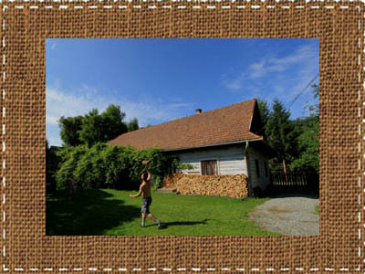Stary dom w Lubniu.
Na noc młodzi małżonkowie chodzili do uroczego maleńkiego domku zwanego Bocianówką. Tam spędzili swój miodowy miesiąc. Tam też mieli swój mały prywatny świat. Niestety, nie było tam ani wody, ani łazienki ani kuchni.
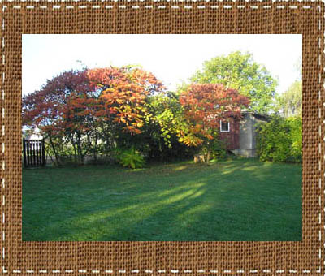Bocianówka
Przyciasny domek skłonił malżonków do przeprowadzki. W latach 1972-1977- mieszkali w Zakopanem, na Olczy. Tadeusz trudnił się renowacją starych mebli oraz wytwarzaniem drewnianej galanterii w stylu zakopiańskim, a Zofia zajmowała się dziećmi.
Wynajmowali przytulne mieszkanie, ale bez wody. Trzeba było nosić ją z podwórka na pierwsze piętro. W końcu jednak Tadeusz wodę doprowadził, bo przy dwójce małych dzieci było to niezbędne. Tadeusz cały dzień pracował, a młoda mama musiała radzić sobie sama w obcym miejscu, z dala od bliskich. Zapewne nie raz tęskniła za kimś, kto wsparłby ją w codziennym zmaganiu, ale też nigdy nie dała poznać, że jest jej ciężko. Nie mogła się przecież poddać, bo miała już dwie córeczki.
Chcę tu opowiedzieć o pewnej przygodzie, związanej z pierwszą ciążą Zosi. Otóż w tych latach z zapałem chodziłam po górach, głównie Tatrach. I tak się jakoś złożyło, że namówiłam Zofię i Tadeusza na "krótki spacerek". W rzeczywistości była to wyprawa na Halę Gąsiennicową! Z Zazadniej, przez Gęsią Szyję, Boczań... Zosia w gustownej ciążowej sukience w tygrysie wzory i w wygodnych bucikach na kaczuszce (niski obcas) dzielnie ten szlak przeszła. Był już koniec sierpnia, ciąża mocno zaawansowana, a droga trochę forsowna. Myślę dziś, że właśnie dzięki tej męczącej eskapadzie wkrótce bez kłopotów urodziła się zdrowa i ładna córeczka Renata!
W 1974 roku, także w Zakopanem, urodziła się druga córka - Małgorzata.
W 1977 roku Zofia i Tadeusz wrócili do Lubnia – rodzinnej miejscowości Tadeusza. Jego rodzice potrzebowali już wsparcia, a Tedeusz marzył o swojej stolarni. Jego ojciec również był stolarzem, bardzo szanowanym i znanym w okolicy, zatem gotowe miejsce pracy czekało na nowego gospodarza.
Tadeusz zajął się tym, co lubił najbardziej czyli pracą z drewnem, a Zofia wychowywała dzieci. Ich niewielki dom - ludny i wesoły - miał niepowtarzalną atmosferę. Choć na wszystko brakowało miejsca - żyły tam wszak dwie rodziny - gospodarze byli niezwykle otwarci i serdeczni. Nic zatem dziwnego, że nie było tygodnia, by ktoś ich nie odwiedzał.
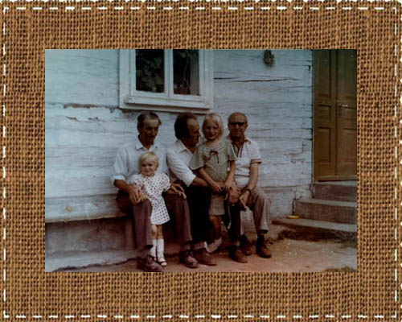Na ławeczce przed domem w Lubniu.
Od lewej: Adam Sawicki z wnuczką Pauliną, brat Tadeusza - Stanisław z chrześnicą Małgorzatą, Zdzisław Zegadło.
Można sobie tylko wyobrazić, ile ta gościnność kosztowała Zofię. Miała na głowie nie tylko trójkę dzieci i męża, ale starszych już teściów i spore gospodarstwo. Nic dziwnego, że postanowiła wykorzystać to, że teściowa jest w domu i może przypilnować dzieci, i zatrudniła się w Urzędzie Gminy Lubień jako księgowa. Wykształcenie rolnicze, zdobyte wbrew woli, nie wystarczało do pełnienia samodzielnie odpowiedzialnych funkcji w obrachunkach, więc dzielna i odważna Zofia postanowiła uzyskać półwyższe wykształcenie - coś w rodzaju dzisiejszego licencjatu. Już pracowała wtedy na pełny etat w Urzędzie Gminy, do szkoły jeździła aż do Nowego Sącza, w domu czekała na nią rodzina i dwie córki, a do tego była właśnie w ciąży z trzecim dzieckiem. Wszystko to nic. Każdego dnia przemierzała pieszo spory kawałek drogi - do pracy w jedną stronę szła 45 minut!
W 1980 roku urodziła się trzecia córka - Paulina. I choć szczęśliwy tata Tadeusz kochał swe córki, w głębi duszy marzył o synu, jaki przejąłby zakład stolarski, podobnie jak on przejął go po swoim ojcu. Marzenie w końcu się spełniło. w 1984 roku Zofia urodziła upragnionego syna, Tomasza.
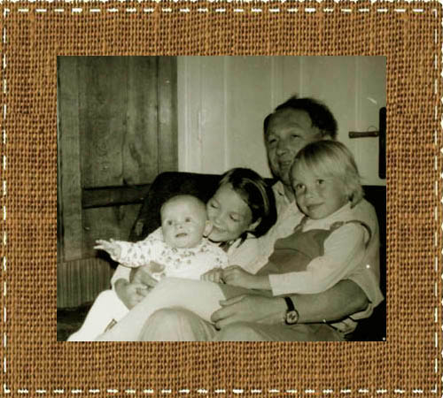Tadeusz z trzema córkami.
Tadeusz dwukrotnie wyjeżdżał za granicę - do Niemiec i USA. Te wyjazdy pomogły wznieść nowy, wygodni, obliczony na całą rodzinę dom. Całą stolarkę gospodarz wykonał sam, podobnie jak ozdobne góralskie meble i intarsjowane ozdoby.
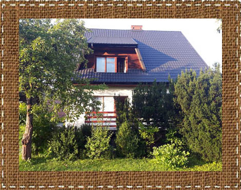Nowy dom w Lubniu.
Niestety, Tadeusz tato niezbyt długo cieszył się córkami, synem i nowym domem. Spokojne życie rodziny Klimarów przerwał nagły wypadek. Tadeusz doznał udaru i po 10 dniach walki o życie zmarł. Był 9 września 1996 roku. Został pochowany na cmentarzu w Lubniu.
Zofia została sama z czwórką dzieci i domem, który wymagał jeszcze wykończenia. Nadal pracowała, a dzieci uczyły się, potem studiowały. I z tym zadaniem poradziła sobie dzielnie, ale tylko ona wie, jaką cenę za to trzeba było zapłacić.
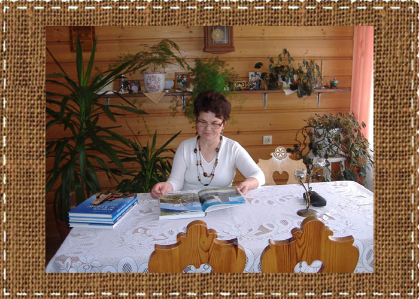
Zofia w swoim domu w Lubniu, pośród mebli i sprzętów zrobionych przez Tadeusza.
Mieszka nadal w Lubniu. Nie związała się z nikim, ale nigdy nie jest samotna. Jak zawsze otaczają ją dzieci, wnuki, krewni i znajomi. Jej dom jest bardzo serdeczny i każdy czuje się tu ważnym gościem. Co prawda dzieci rozjechały się w różne strony, ale każda uroczystość skupia je wokół stołu w rodzinnym domu.